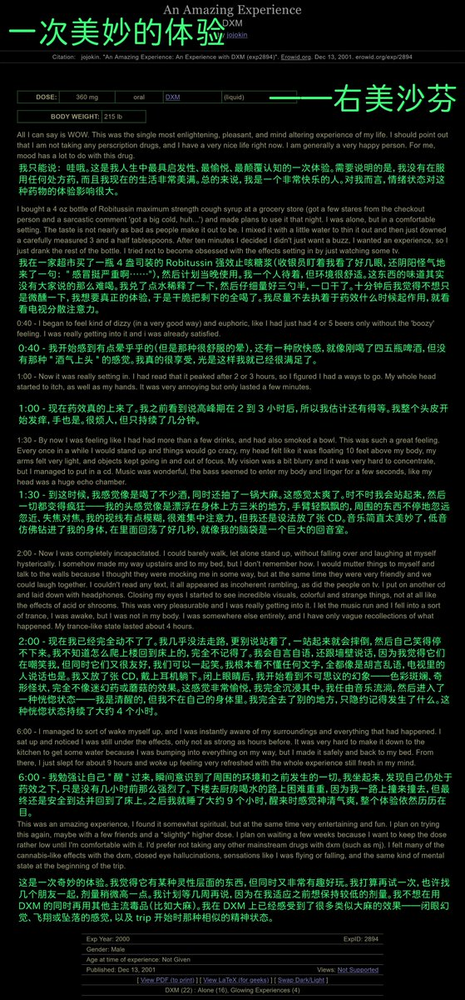

气态雨
@rainnnnn0423
@SalviaSWC 有的，我吃这个量内幻和解离就有这么强😋

鼠尾草～🌿
@SalviaSWC
药物报告连载之《一次美妙的体验》
服用360mg右美沙芬的药效的报告，药效持续了接近6个小时，产生了奇妙的幻觉。
不知道和大家od右美的感觉像不像......晕和生理感觉应该大差不多，但是360mg右美的内幻和解离不会这么多吧(个人感觉)🥺或者是没耐药的情况下吃这么一点就有很强的药效？ https://t.co/lNWGv7QzYh